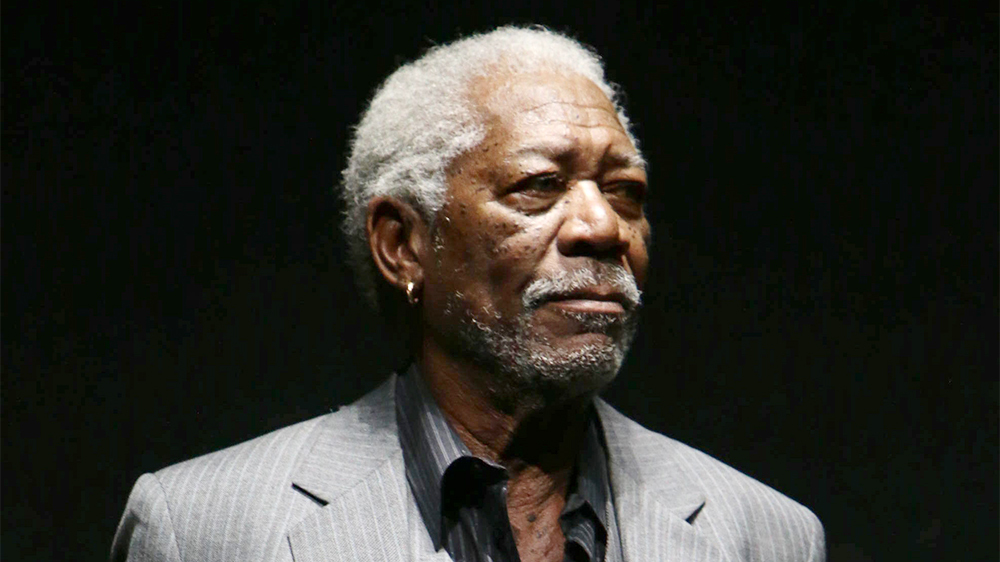

It all started as a dream in the 5th grade, when I was picked on by my class bully, Ernando Fuentes, he pulled his pants and put his buttcrack on my face. This made me EXTREMELY angry and all I wanted was to get revenge on Ernando Fuentes. Obviously, I couldn't do anything as a little 5th grade dweeb, so I decided to be patient and wait for the right moment to get my revenge. I decided to join the army, where I learned how to use weapons and became an expert in hand to hand combat. I served in the army for 15 years and once I was out, I decided to pursue a career as a professional assassin "Hitman". To do so, I had to earn a licesence to kill and had to be CPR verified. After getting my licesence, my career as a "Hitman" blew up. I became the top professional assassin in Jamaica, and I was given the title of "Marty McKill". This job allowed me to feel powerful, and it finally gave me the courage to fulfill my promise of getting revenge on Ernesto Fuentes. So one august night, I decided to travel to his home in the dumpsters of Minnesota, and gave him a couple rounds that made sure he would never bully me again. After 10 years as a professional hitman, I decided to create my own firm of assassins, and I decided to call it "Natural Born Killers". Since I founded this organization in 1997, it became the top assassin firm around the world. We are proud of our work and we will continue to strive towards cleaner kills and happier clients.